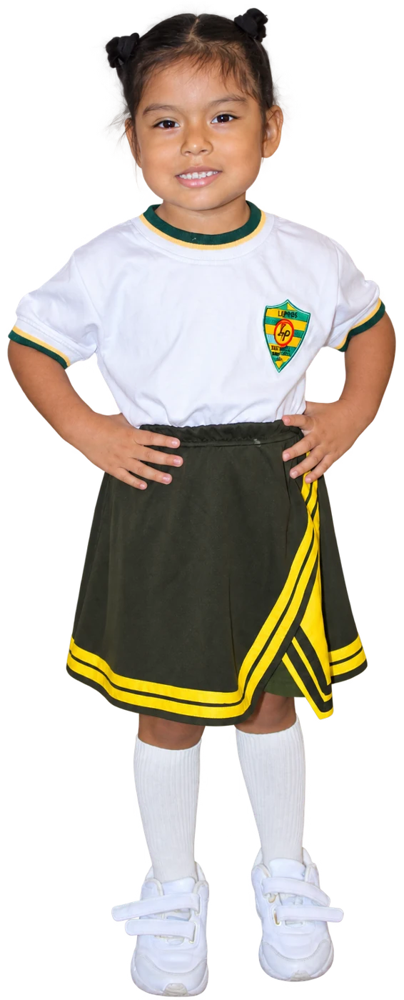
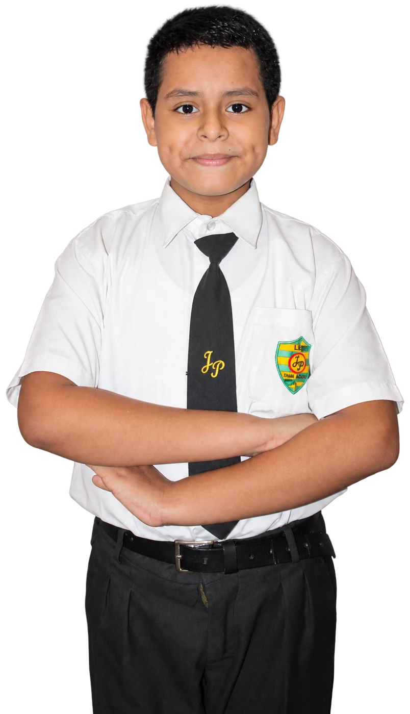
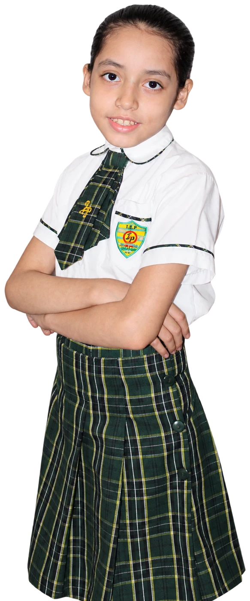
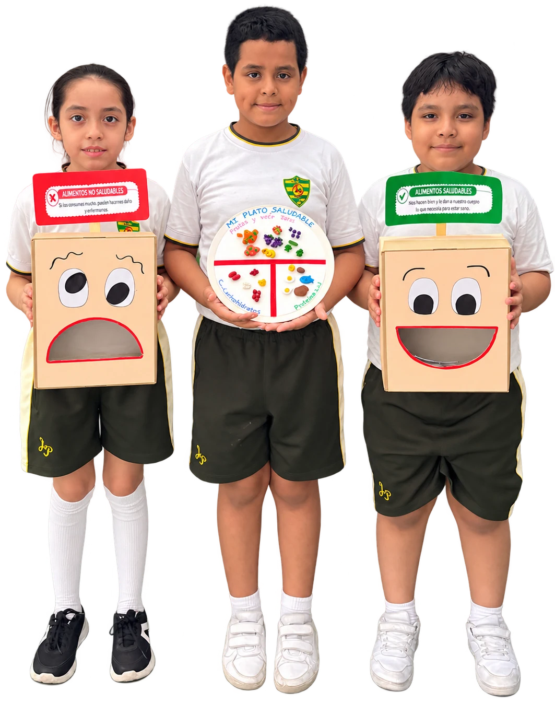
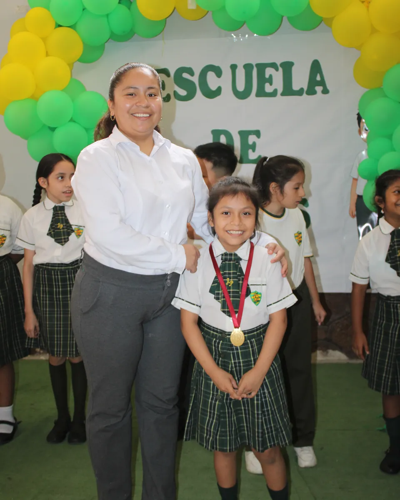

Inicial: de 3 a 5 años
El juego y la exploración acompañan el desarrollo de la autonomía, el lenguaje y la convivencia. Cada niño y niña avanza desde sus propias experiencias.
Inicial de 3 a 5 años y Primaria de 1.º a 6.º grado: acompañamos cada etapa del aprendizaje y el crecimiento de nuestros estudiantes.

El Nivel Inicial recibe a niños y niñas de 3, 4 y 5 años. El juego, la exploración y la convivencia acompañan sus primeros descubrimientos, respetando el proceso de cada edad.
Trabajamos la autonomía, el lenguaje y la psicomotricidad, junto con las primeras nociones de lectoescritura y pensamiento lógico que preparan el ingreso a Primaria.



En Primaria se consolidan las bases: lengua, matemática, ciencias naturales y sociales, con el tiempo y el acompañamiento que cada estudiante necesita.
La tecnología entra desde primer grado, no como un curso aislado sino como una herramienta más para investigar, construir y presentar lo aprendido.
Desde los primeros descubrimientos en Inicial hasta los aprendizajes de Primaria, cada etapa tiene su propio ritmo.
El juego y la exploración acompañan el desarrollo de la autonomía, el lenguaje y la convivencia. Cada niño y niña avanza desde sus propias experiencias.
Acompañamos la construcción de aprendizajes y hábitos de estudio, dando espacio a las preguntas, la participación y el trabajo con otros.
Jornada escolar: de 7:20 a. m. a 1:50 p. m.
Experiencias que acompañan a nuestros estudiantes dentro y fuera del aula.


